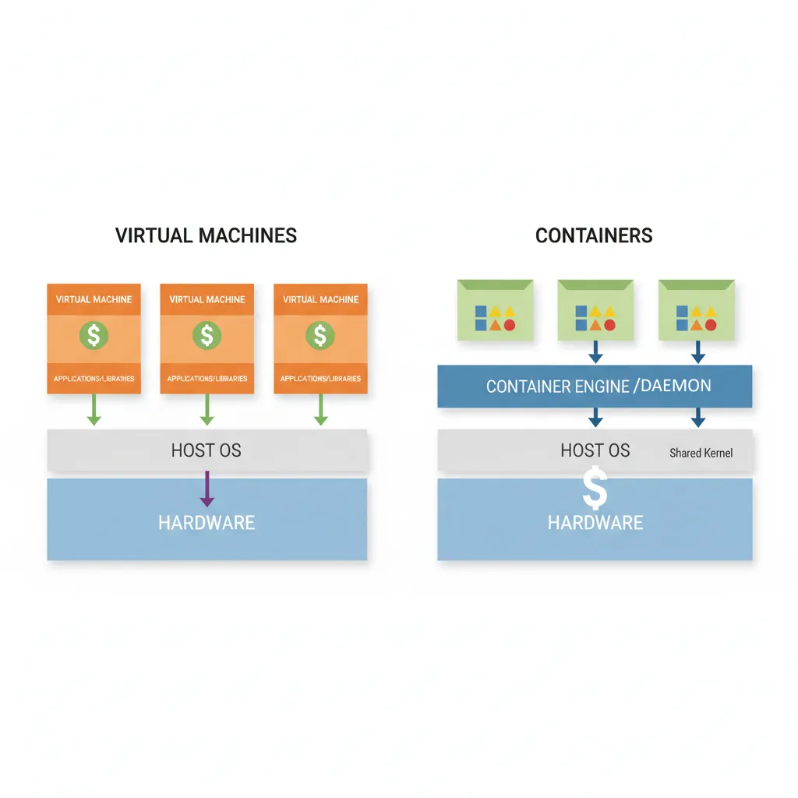
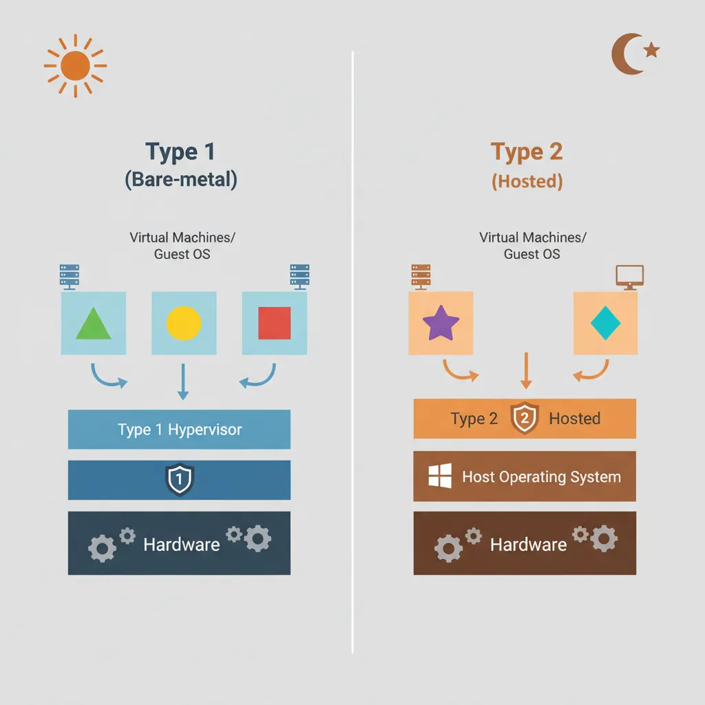
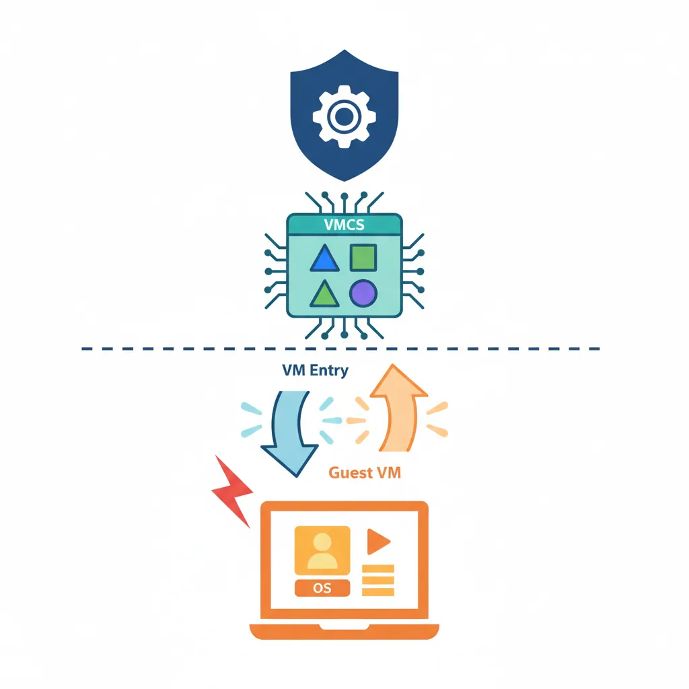
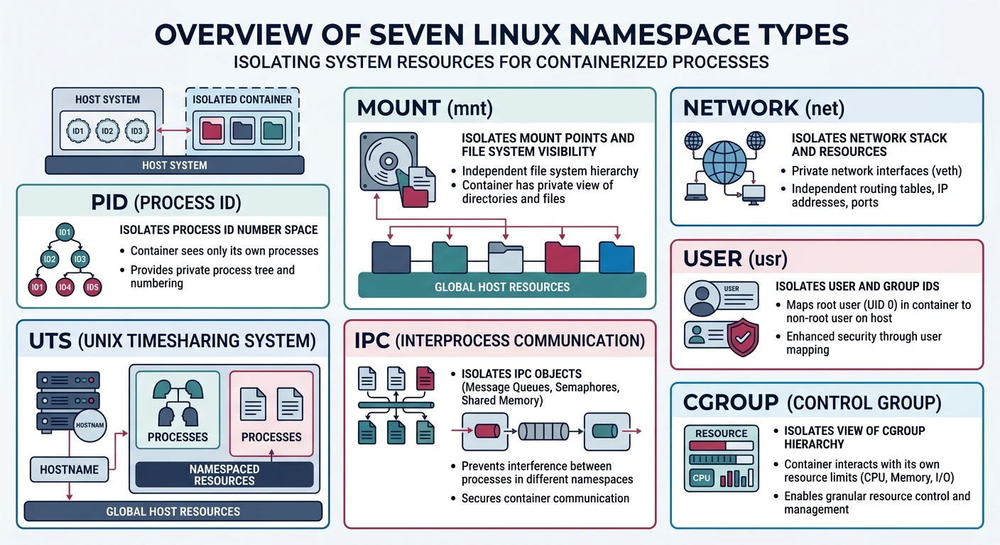

Virtualization enables running multiple operating systems on a single physical machine. Containers provide lightweight isolation using OS-level virtualization through namespaces and cgroups.
Series Context: This is Part 21 of 24 in the Computer Architecture & Operating Systems Mastery series. We explore virtualization technologies that power modern cloud computing.
The Isolation Revolution: VMs let you run Windows inside Linux, or 50 Linux servers on one physical machine. Containers go further—isolating apps in milliseconds. How does this magic work?
Virtualization Basics
Virtualization creates abstract versions of physical resources—allowing multiple virtual machines to share one physical machine.

Virtual machines vs containers — VMs include full guest OS while containers share the host kernel
A hypervisor (Virtual Machine Monitor) manages VMs, providing them with virtualized hardware.

Type 1 (bare-metal) vs Type 2 (hosted) hypervisor architectures
Hypervisor Types:
══════════════════════════════════════════════════════════════
TYPE 1 (Bare Metal): TYPE 2 (Hosted):
┌───────┐ ┌───────┐ ┌───────┐ ┌───────┐
│ VM1 │ │ VM2 │ │ VM1 │ │ VM2 │
└───────┘ └───────┘ └───────┘ └───────┘
┌─────────────────┐ ┌─────────────────┐
│ Hypervisor │ │ Hypervisor │ (app)
└─────────────────┘ ├─────────────────┤
┌─────────────────┐ │ Host OS │
│ Hardware │ └─────────────────┘
└─────────────────┘ ┌─────────────────┐
│ Hardware │
└─────────────────┘
Examples:
• Type 1: VMware ESXi, Xen, KVM, Hyper-V Server
• Type 2: VirtualBox, VMware Workstation, Parallels
KVM (Kernel-based VM) is hybrid - Linux kernel IS the hypervisor!
Hardware Virtualization
Modern CPUs provide hardware virtualization extensions (Intel VT-x, AMD-V) for efficient VM execution.

Hardware virtualization — VMX root/non-root modes with VM entry and VM exit transitions managed by VMCS
CPU Virtualization Extensions:
══════════════════════════════════════════════════════════════
1. Root Mode (VMX root) - Hypervisor runs here
2. Non-root Mode (VMX non-root) - Guest VMs run here
VM Exit: Guest needs hypervisor help (I/O, privileged op)
Non-root → Root (expensive: ~1000 cycles)
VM Entry: Return control to guest
Root → Non-root
VMCS (Virtual Machine Control Structure):
━━━━━━━━━━━━━━━━━━━━━━━━━━━━━━━━━━━━━━━━━━━━━━━━━━━━━━━━━━━━
• Guest state (registers, CR3, etc.)
• Host state (where to return on VM exit)
• Control fields (what causes VM exits)
• Exit information (why exit occurred)
Namespaces isolate system resources, making processes see different views of the system.

Linux namespaces — seven isolation dimensions providing containers with independent views of system resources
Namespace Types
Linux Namespaces (7 types):
══════════════════════════════════════════════════════════════
1. PID Namespace
• Isolated process ID numbers
• Container sees PID 1 as init
• Host sees container processes with different PIDs
2. Mount Namespace
• Isolated filesystem mounts
• Container has different root filesystem
• Can't see host mounts
3. Network Namespace
• Isolated network stack
• Own interfaces, routes, iptables
• Container can have eth0 while host has different eth0
4. UTS Namespace
• Isolated hostname and domain name
• Container can have different hostname
5. IPC Namespace
• Isolated System V IPC, message queues
• Processes can't see each other's IPC
6. User Namespace
• Isolated user/group IDs
• Container root (UID 0) maps to unprivileged host user
7. Cgroup Namespace
• Isolated view of cgroup hierarchy
# Create new PID namespace
$ sudo unshare --pid --fork --mount-proc bash
$ ps aux
USER PID %CPU %MEM COMMAND
root 1 0.0 0.0 bash # PID 1 inside namespace!
# View namespaces of a process
$ ls -la /proc/$$/ns/
lrwxrwxrwx 1 user user 0 Jan 15 10:00 mnt -> mnt:[4026531840]
lrwxrwxrwx 1 user user 0 Jan 15 10:00 pid -> pid:[4026531836]
lrwxrwxrwx 1 user user 0 Jan 15 10:00 net -> net:[4026531969]
Control Groups (cgroups)
cgroups limit, account, and isolate resource usage (CPU, memory, I/O).
cgroups Resource Controllers:
══════════════════════════════════════════════════════════════
cpu - CPU time allocation
memory - Memory limits (OOM killer priority)
io - Block I/O throttling
pids - Max number of processes
cpuset - CPU and memory node pinning
# Create cgroup and limit memory to 100MB
$ sudo mkdir /sys/fs/cgroup/mygroup
$ echo 100M | sudo tee /sys/fs/cgroup/mygroup/memory.max
$ echo $$ | sudo tee /sys/fs/cgroup/mygroup/cgroup.procs
# Check container resource usage
$ docker stats
CONTAINER CPU % MEM USAGE / LIMIT
my_app 0.50% 64MiB / 512MiB
# Docker basics
$ docker run -it ubuntu:22.04 bash # Run container
$ docker ps # List running
$ docker images # List images
# Container = Image + Writable layer
# Image layers are read-only, shared between containers
# Dockerfile example
FROM python:3.11-slim
WORKDIR /app
COPY requirements.txt .
RUN pip install -r requirements.txt
COPY . .
CMD ["python", "app.py"]
Container Internals: Docker (or containerd) calls clone() with CLONE_NEWPID | CLONE_NEWNS | CLONE_NEWNET... to create namespaces, sets up cgroups for resource limits, then pivot_root to the container filesystem.
Container Orchestration
Kubernetes manages containerized applications across clusters of machines.
Kubernetes Architecture:
══════════════════════════════════════════════════════════════
Control Plane: Worker Nodes:
┌───────────────────┐ ┌───────────────┐
│ API Server │ │ kubelet │
│ Scheduler │ ─────→ │ kube-proxy │
│ Controller Mgr │ │ containerd │
│ etcd (state) │ └───────────────┘
└───────────────────┘ │
┌────┴────┐
│ Pods │
└──────────┘
Key Concepts:
• Pod: Smallest deployable unit (1+ containers)
• Service: Stable network endpoint for pods
• Deployment: Manages pod replicas, rolling updates
• ConfigMap/Secret: Configuration management
Conclusion & Next Steps
Virtualization powers modern cloud computing. We've covered:
VMs vs Containers: Full isolation vs lightweight sharing
Hypervisors: Type 1 bare-metal vs Type 2 hosted
Hardware Virtualization: Intel VT-x, AMD-V, VM exits
Namespaces: Isolating PID, network, mounts, users
cgroups: Resource limits and accounting
Containers: Docker and container internals
Orchestration: Kubernetes architecture
Key Insight: Containers aren't VMs—they're isolated processes sharing the kernel. This makes them fast and light, but also means security depends on kernel isolation primitives.